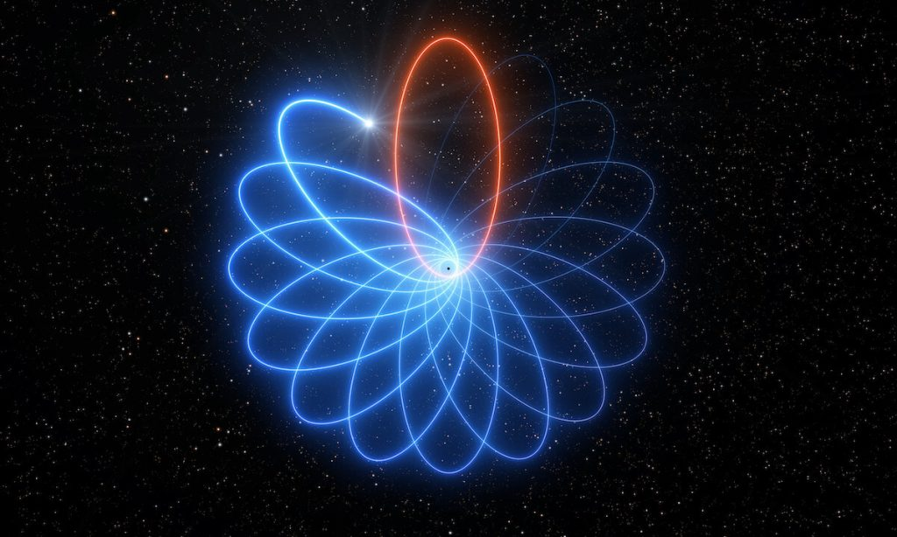

အခုလဲ သူ့ရဲ့ နှိုင်းရ သီအိုရီ မှန်ကန်ကြောင်း သက်သေ အသစ် ထပ်မံ ရှာဖွေ တွေ့ရှိခဲ့ ပြန်ပါပြီ။ တနည်း အားဖြင့် နောက်ထပ် အောင်ပွဲ တစ်ခုလို့လဲ ဆိုနိုင်ပါတယ်။
ကျွန်တော်တို့ မစ်ကီးဝေးရဲ့ အလယ်ဗဟိုမှာ မဟာ တွင်းနက် (Supermassive Black hole) ကြီး တစ်ခု ရှိနေပါတယ်။ ဒီ တွင်းနက် ကြီးဟာ နေအစင်းပေါင်း ၃ သန်းကျော် ဒြပ်ထု (3.6 x 10^6 Solar mass) ခန့် ရှိမယ်လို့ ခန့်မှန်း ကြပါတယ်။ ဒီ တွင်းနက်ကြီးကို Sagittarius A* လို့ အမည် ပေးထားပါတယ်။
ဒီတွင်းနက်ကြီးကို ပတ်နေတဲ့ ကြယ်တွေရဲ့ ပါတ်လမ်းကို နက္ခတ် ပညာရှင် တွေက နှစ်ပေါင်းများစွာ အသေးစိတ် လေ့လာ ခဲ့ကြပါတယ်။
ဒီ ကြယ်တွေ အနက်က S2 လို့ အမည်ပေးထားတဲ့ ကြယ်ဟာ တွင်းနက်ကို ၁၆ နှစ် တစ်ကြိမ် ပတ်နေပါတယ်။ ဒီကြယ်ဟာ ဗဟို တွင်းနက်နားကို နီးလာလိုက် ဝေးသွားလိုက်နဲ့ ပတ်နေတာ ဖြစ်ပါတယ်။ ပြီးခဲ့တဲ့ နှစ်က ဒီကြယ်ဟာ Sagittarius A* မဟာတွင်းနက်ကြီးရဲ့ ဗဟိုကနေ ကီလိုမီတာ သန်း ၂၀,၀၀၀ ခန့် အကွာအဝေး အထိ အနီးဆုံး ကပ်လာ ခဲ့တာကို တွေ့ရှိကြရပါတယ်။
အကယ်လို့ နယူတန်ရဲ့ ဆွဲအား နိယာမသာ မှန်ကန် ခဲ့မယ်ဆို ဒီ ကြယ်ဟာ မူလ လမ်းကြောင်း အတိုင်း ဆက်ပြီး ခရီးနှင် သွားဖို့ပဲ ရှိပါတယ်။ ဒါပေမယ့် တကယ့် လက်တွေ့မှာတော့ နယူတန်ရဲ့ နိယာမက ခန့်မှန်း တွက်ချက်ထားတဲ့ လမ်းကြောင်း အတိုင်း ဆက်လက် လည်ပတ်ခြင်း မရှိခဲ့ ပါဘူး။
ဒီ့အစား ဒီကြယ်ဟာ သူ့ မူလ လမ်းကြောင်းကနေ အနည်းငယ် သွေဖီတဲ့ လမ်းကြောင်းအတိုင်း ပြန်ထွက် တာကို တွေ့ကြရ ပါတယ်။ (ပုံတွင်ရှု)

ဒီ တွေ့ရှိချက်ကို European Southern Observatory’s Very Large Telescope က နက္ခတ် ပညာရှင် တွေက Astronomy & Astrophysics သုတေသန ဂျာနယ်မှာ မတ်လ ၂၃ ရက်နေ့က တင်ပြ ခဲ့ပါတယ်။
အခု ဖြစ်စဉ် သဘာဝဟာ ရွှားချိုင်း လည်ပတ်ခြင်း (Schwarzschild precession) လို့ အမည်ရတဲ့ ရူပဗေဒ သဘာဝ အတိုင်း ဖြစ်ပါတယ်။ ဒီ ဖြစ်စဉ်ကြောင့် အခု S2 ကြယ်ရဲ့ ပတ်လမ်းဟာ ဘာနဲ့ တူလာ မလဲဆိုတော့ ပန်းပွင့်ပုံ နဲ့ တူလာမှာ ဖြစ်ပါတယ်။ (ပုံတွင်ရှု)
(ဘာသာပြန်သူ မှတ်ချက်။ Precession ဆိုတာက ရူပဗေဒ သဘောအရ ဝင်ရိုး တစ်ခုအပေါ် လည်ပတ်နေတဲ့ အရာဝတ္ထု တစ်ခုရဲ့ ဝင်ရိုး တဖြည်းဖြည်း လည်သွားတာကို ပြောတာ ဖြစ်ပါတယ်။ ဒီ သဘာဝ အရ လည်နေတဲ့ အရာ ဝတ္ထု တစ်ခုရဲ့ ဝင်ရိုးကိုယ်နှိုက်ဟာလဲ ဦးတည်ရာ ပြောင်းပြီး လည်နေပါတယ်။ ဥပမာ ကမ္ဘာရဲ့ ဝင်ရိုးဟာ နှစ် ၂၆,၀၀၀ တစ်ကြိမ် လည်ပါတယ်။)
အခု တွေ့ရှိချက်ကို တင်ပြခဲ့တဲ့ နက္ခတ် ပညာရှင် တွေရဲ့ အဆိုအရ ဒီ S2 ကြယ်ရဲ့ ပါတ်လမ်းကို အသေးစိတ် လေ့လာ ခြင်းအားဖြင့် မစ်ကီးဝေးရဲ့ ဗဟိုမှာ ရှိတဲ့ အမှောင်ဒြပ် (dark matter) တွေနဲ့ တွင်းနက် အသေးလေးတွေ ရဲ့ ပဏာမ ဘယ်လောက် များသလဲ ဆိုတာ တွက်ချက်နိုင်လိမ့်မယ်လို့ ဆိုပါတယ်။
Star’s Mysterious Orbit Around Black Hole Proves Einstein Was Right— Again | Physics-Astronomy
Detection of the Schwarzschild precession in the orbit of the star S2 near the Galactic centre massive black hole | Astronomy & Astrophysics